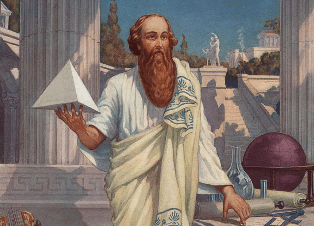
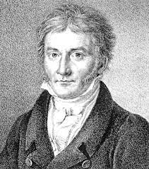
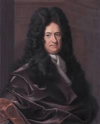
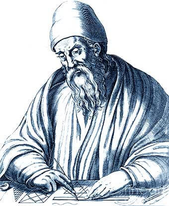
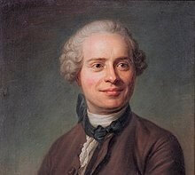
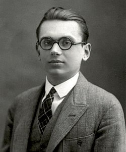

Pitágoras fue un filósofo y matemático griego considerado el primer matemático puro. Contribuyó de manera significativa en el avance de la matemática helénica, la geometría y la aritmética, derivadas particularmente de las relaciones numéricas, y aplicadas por ejemplo a la teoría de pesos y medidas, a la teoría de la música o a la astronomía. El pitagorismo formuló principios que influyeron tanto en Platón como en Aristóteles y, de manera más general, en el posterior desarrollo de la matemática y en la filosofía racional en Occidente.
Historia de la matematica
Johann Carl Friedrich Gauss (Braunschweig, 30 de abril de 1777-Gotinga, 23 de febrero de 1855) fue un matemático, astrónomo y físico alemán que contribuyó significativamente en muchos ámbitos, incluida la teoría de números, el análisis matemático, la geometría diferencial, la estadística, el álgebra, la geodesia, el magnetismo y la óptica. Considerado ya en vida como Princeps Mathematicorum, príncipe de los matemáticos, Gauss ha tenido una influencia notable en muchos campos de las matemáticas y de la ciencia. Fue de los primeros en extender el concepto de divisibilidad a otros conjuntos además de los números enteros.
El robo del siglo: ¡Llego el calculo infinitesimal!


En el año 1696, el matemático francés L'Hôpital publicó Analyse des infiniment petits pour l'intelligence des lignes courbes, siendo el primer libro de texto de cálculo diferencial que se escribió. En él reconoció las contribuciones de Newton, pero también remarcó que el método de Leibniz era mucho más fácil y rápido de entender debido a la notación que utilizaba. Esto último llevó a L´Hopital a sostener que lo expuesto por Newton en su libro Principia era casi en su totalidad el cálculo desarrollado por Leibniz.
Algunos matematicos notables

Euclides
Euclides (en griego Εὐκλείδης, Eukleidēs, latín Euclīdēs) fue un matemático y geómetra griego (ca. 325 a. C.-ca. 265 a. C.) Se le conoce como "el padre de la geometría". Fue un activo en Alejandría (antiguo Egipto) en tiempos de Ptolomeo I Sóter (323 – 283 a. C.). Fue el fundador de la escuela de matemáticas de la ciudad.

D'Alambert
Jean le Rond D'Alembert (París, 16 de noviembre de 1717-29 de octubre de 1783) fue un matemático, filósofo y enciclopedista, uno de los máximos exponentes del movimiento ilustrado. Fue célebre por crear L'Encyclopédie y por su labor en las matemáticas, relativo a las ecuaciones diferenciales y a las derivadas parciales.

Godel
Kurt Gödel,(Brünn, Imperio austrohúngaro, actual República Checa, 28 de abril de 1906-Princeton, Estados Unidos; 14 de enero de 1978) fue un lógico, matemático y filósofo austríaco. Se lo reconoce como el matemático de las paradojas que 'hackeó' la Constitución americana